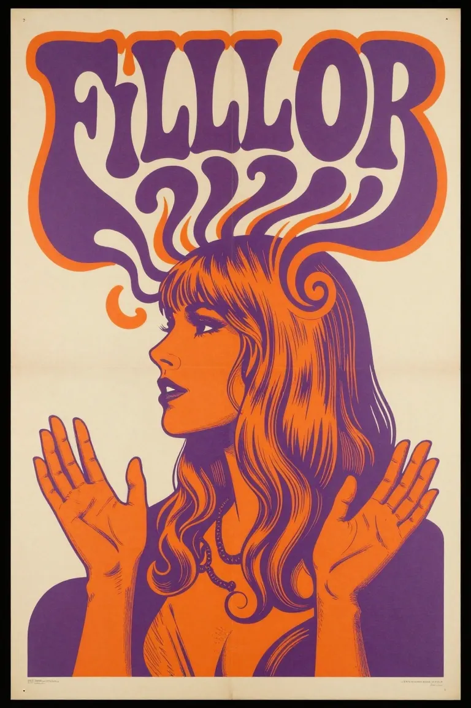

Офсетный плакат на танцевальный вечер в Fillmore или Avalon, с буквами, которые плавятся, заполняя форму, и дополнительными цветами, которые вибрируют. Уэс Уилсон, Виктор Москозо, Рик Гриффин, Маус и Келли сделали серию в 1966–1968 годах.

Главная идея
Плакат, заставляющий зрителя остановиться и расшифровывать, втягивает его в танец раньше, чем он прочтёт дату.
Принципы дизайна
Заставляйте буквы заполнять форму (фигуру, пламя, шар), пока каждая не изогнётся по ней.
Ставьте рядом два дополнительных цвета равной светлоты, чтобы край вибрировал.
Берите 2–4 плоские офсетные краски на цветной или белой бумаге; меняйте цвета от тиража к тиражу.
Заимствуйте линию ар-нуво, Мухи и венского Сецессиона и доводите её до избытка.
Прячьте дату и место в рисунок; зритель должен потрудиться, чтобы их прочесть.
Заполняйте всё пространство; не оставляйте пустого фона.